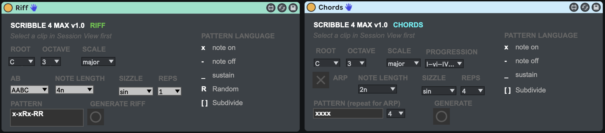

{{ site.description }}
npm install scribbletuneLet's put something together. Create a file called chords.js and paste the following in it,
const scribble = require('scribbletune');
const clips = ['1032', '2032', '4021', '3052'].map(order =>
scribble.clip({
pattern: '[xx][xR]'.repeat(4),
notes: scribble.arp({
chords: 'Dm BbM Am FM BbM FM CM Gm',
count: 8,
order,
}),
accent: 'x-xx--xx',
})
);
scribble.midi([].concat(...clips), 'chords.mid');
Now execute that file in the terminal at the same location as you saved it,
node chords.jsThis will generate a MIDI file called chords.mid in the same location as you executed this script. You can import this file into any music production software like Ableton Live or even Garage Band! Here's how it sounded when I did that and rendered it with a couple of synths and the same chords on a pad sound:
Here's a quick video on how to use Scribbletune to create trance riffs. We will use Ableton Live alongside a script to do this in about 20 minutes.
If you use Ableton Live, then you can download this set of Max for Live devices called scribble4max, which are made with Scribbletune! Click here to learn more about using Scribbletune in Ableton Live through Max for Live.
